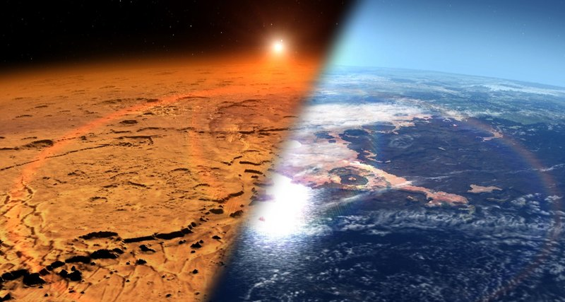
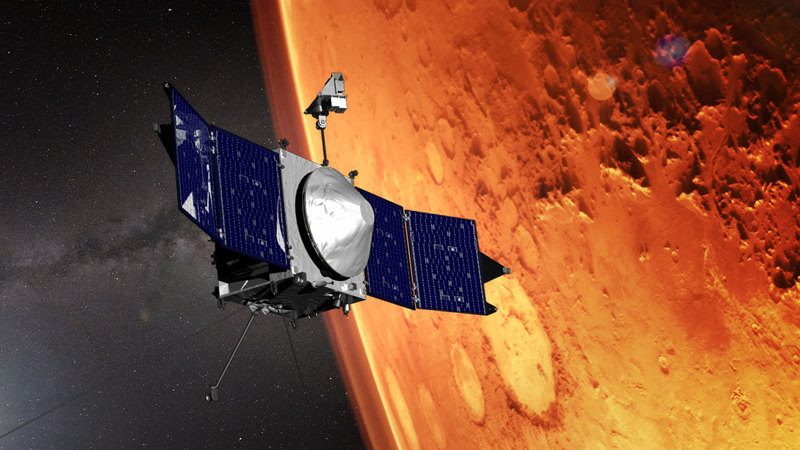

Терраформирование Марса: насколько это реально
Освоение Марса последнее время является одной из основных тем, обративших на себя пристальное внимание мирового научного сообщества. «Популярная механика» попыталась разобраться в том, насколько реально терраформирование Красной планеты с учетом возможностей современных технологий и предлагает вам подробный обзор потенциальных способов колонизации его и других планет Солнечной системы человеком.

В течение вот уже многих десятилетий люди занимаются поиском жизни или хотя бы ее следов на Марсе. До сих пор эти исследования не принесли желаемых результатов, но идея о «живом» Марсе продолжает будоражить умы научного сообщества по всему миру. Если мы не нашли жизнь на Красной планете то, возможно, мы сами сможем ее туда принести? Что, если бы у человека однажды получилось превратить песчаный, скалистый ландшафт Марса в цветущий сад, — подобие нашего родного мира?
Несмотря на то, что для обывателя это звучит как научная фантастика, исследователи в государственном и частном секторе всерьез занимаются изучением вопроса о том, как современные технологии могут терраформировать Марс, и по большей части потому, что это сделает колонизацию и дальнейшее исследование планеты куда более простыми.
Так возможно ли терраформирование Марса?
Ответ — да. Однако ученые полагают, что это осуществимо куда менее драматическим образом, чем предложенная Элоном Маском идея взорвать ядерный снаряд в тонкой атмосфере Марса. «Ошибочно полагать, что в ядерном заряде содержится достаточное количество энергии. Если взять все существующее ядерное оружие на Земле, то это будет эквивалентно энергии, которую Марс получает от Солнца всего за час», объясняет Крис Маккей, планетарный исследователь НАСА. Согласно ему, а также другим ученым, нагреть Марс человечеству поможет солнечный свет. Яркий пример тому — глобальное потепление на Земле, вызванное истончением озонового слоя и оттого избыточной дозой солнечной радиации, которая повышает температуру на планете. Майкл Чаффин, ученый, работающий над проектом Mars Atmosphere and Volatile EvolutioN (MAVEN), уверен, что атмосферу Марса нужно сделать еще толще для того, чтобы она стала похожа на земную. «Мы обнаружили, что на ранних этапах формирования жизни на планете крайне необходимо удерживать на ее поверхности воду, что возможно лишь при куда более толстом атмосферном слое, чем тот, что существует сейчас на Марсе», говорит он.
В настоящее время атмосфера Марса такая тонкая и так плохо удерживает тепло, что вода может существовать на поверхности планеты исключительно на протяжении коротких промежутков времени. «Если взять стакан жидкой воды и вылить ее на Марс, то часть ее замерзнет, а другая часть обратится в пар. В любом случае, она не останется в жидком состоянии надолго», уверен Чаффин. Теоретически, если бы мы могли перекачать часть парниковых газов из атмосферы Земли на Марс, то можно было бы прогреть планету до такого состояния, чтобы на ней спокойно существовало большое количество жидкой воды, как это было в далеком прошлом (около 3,5 млрд лет назад). Чем толще атмосфера — тем стабильнее атмосферное давление и температура на планете, а значит и вода тоже будет стабилизироваться.
Маккей уверен, что одним из способов осуществить подобную программу является производство супер-парниковых газов — перфторуглеподов (ПФУ) на специальных заводах. Они не нарушили бы тонкий озоновой слой планеты и не стали бы токсичной угрозой для потенциальных колонистов, но смогли бы в достаточной мере удержать тепло на Марсе. После этого, спустя 100 лет после прогрева планеты люди смогут приступить к высаживанию растений на марсианском грунте. Потребляя CO2 и выделяя большое количество кислорода, зелень постепенно изменила бы химический состав атмосферы, сделав ее пригодной для дыхания — процесс, который, если говорить о современном уровне развития биотехнологий, займет тысячи лет.
Практические проблемы
Одной из главных особенностей, которую должны будут принять во внимание будущие программы терраформирования, является то, что на Марсе уже содержатся парниковые газы, к примеру известный всем CO2. Если проводить работы без учета их влияния, то можно нагреть планету слишком сильно. В итоге, вместо Эдема вы получите Венеру — планету с плотной атмосферой, которая состоит из парниковых газов, отчего температура на поверхности так высока, что на ней можно плавить свинец. Кроме того, атмосферное давление там так высоко, что на Земле такое можно наблюдать лишь в океане, на глубине около 900 метров.
В настоящее время Маккей работает над расчетами, которые позволят оценить количество СО2, в замороженном состоянии находящегося вблизи или под полярными льдами планеты. По оценкам специалистов, там все еще недостаточно много двуокиси углерода для нагрева планеты, но точное ее число все еще остается неизвестным. Но предположим, что у нас получилось создать достаточно влажную и теплую для жизни планету. Однако что случится с ее атмосферой со временем? Безусловно, Марс вновь потеряет ее. Однако на это, по прогнозам ученых, уйдет порядка 100 миллионов лет, что в масштабах человечества является настолько огромным сроком, что стоит хотя бы попытаться.
Планеты разные, а правила для всех одинаковые?
Различия между Венерой, Марсом и Землей на первый взгляд довольно очевидны. На одной слишком жарко, на другой слишком холодно, третья же в самый раз подходит человеку. Но, по большому счету, все они — лишь каменистые планеты среднего размера. Модели климатических изменений, разработанные на Земле, могут с большой вероятностью работать и на других планетах — надо лишь учесть различия в толщине атмосферных слоев, размеры и относительную близость каждой планеты к Солнцу. Однако некоторые аспекты марсианского климата остаются для исследователей загадкой.
«Данные, полученные с помощью роверов, показывают, что на планете была жидкая вода около 4 миллиардов лет назад. Если вернуться в прошлое, то на Марсе обнаружится большое количество озер и рек, могущих выполнять ту же важную для жизни функцию, что и земные. Но вот загадка: если у вас раньше были большие массивы жидкой воды, а сейчас нет, то что же произошло с атмосферой планеты?», задается вопросом Чаффин. Здесь-то на помощь и приходит MAVEN. Зонд НАСА вращается вокруг планеты с 2014 года, исследуя состав ее атмосферы и радиационный фон. Исследователи пытаются выяснить, что привело к резкой потере значительной части атмосферы в прошлом. «Марс теряет 180 грамм заряженных атмосферных частиц в секунду. Этого достаточно, чтобы за всю историю Марса исчезла вся текущая, тонкослойная атмосфера, но это не объясняет потерю раннего, более плотного атмосферного слоя», говорит ученый.

Заключение
Как бы то ни было, вопрос терраформирования Марса намного глубже, чем просто решение вопроса о прогреве и увлажнении планеты. Марсианский грунт беден на питательные вещества и богат персульфидами и перхлоратами, а значит, земные бактерии могут попросту не прижиться в нем. Что, если в ходе экспедиции Маска колонисты обнаружат на Марсе собственные бактерии, которые будут уничтожены в результате терраформирования и, таким образом, уникальный образец ксенобиокультуры будет утерян? Ученые полагают, что серьезные дебаты и планы об освоении планеты можно будет строить только тогда, когда человек впервые вступит на Красную планету и сможет исследовать ее самостоятельно, не прибегая к зондам и спутникам.
По этой причине мы собираем команду добровольцев, которые отважатся на полет в одну сторону и приступят к выполнению этой сложной задачи! Если вы один из них, предлагаем вам заполнить анкету и присоединиться к нашей миссии.